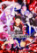

Hello, I'm Amit Kumar Garai
Aspiring towards AI, Machine Learning & Automation
Currently in my 2nd year of BCA, exploring the fundamentals of Machine Learning, predictive modeling, and Python automation. Eager to learn, build real-world projects, and grow toward a career in the AI engineering landscape.
import numpy as np
from sklearn.pipeline import make_pipeline
model = make_pipeline(StandardScaler(), SVC(probability=True))
model.fit(X_train, y_train)
# Learning to evaluate decision boundaries & accuracy metrics# Telemetry & Learning Profile
DEGREE: BCA (2025-2029) // LOCATION: India
EXPLORING: Scikit-Learn | Python | Playwright | Modern Web
MINDSET: Curious student eager to learn & build real projectsJourney & Mindset
Hi! I'm a 2nd-year BCA student with a deep curiosity for how intelligent systems and data-driven models work. Rather than claiming to be an expert, I consider myself a dedicated learner on the path to becoming an AI & Machine Learning Engineer. I love getting my hands dirty with code — studying the math and intuition behind algorithms, training predictive models with Scikit-Learn, and building automated Python bots to solve real, practical problems.
Machine Learning & Data Exploration
Studying core supervised and unsupervised algorithms with Scikit-Learn, understanding statistical concepts, and practicing data manipulation using Pandas and NumPy.
Python Automation & Scripting
Building practical headless browser bots with Python and Playwright to automate repetitive web tasks, weekly claims, and routine workflows.
Modern Web & Applied Tools
Experimenting with responsive interfaces (Next.js, React) and client-side utilities (like WebAssembly FFmpeg) to showcase and deploy projects interactively.
Stories Fueling Curiosity, Logic & World-Building

Technical Matrix & Tooling
Machine Learning & AI
Languages & Systems
Web & Automation
Interactive Neural Classifier Simulator
Interact directly with this live, client-side inference engine. Adjust the feature parameters below to observe real-time botanical classification probability curves calculated across learned vector spaces:
Iris Versicolor
Crystalline Portfolio & Builds
Apex Downloader
A high-performance media processing suite supporting YouTube, Instagram, and Pinterest. Features in-browser WebAssembly FFmpeg multiplexing, enabling client-side audio/video merging without expensive backend transcoding servers.
Epic Games Auto Claimer
Fully autonomous Python headless bot powered by Playwright. Automates authentication, weekly giveaway detection, and promotional cart checkouts with 100% zero-touch reliability.
Jarvis 2.0 Voice Assistant
Autonomous desktop voice assistant built on Gemini 2.5 Flash Live bidirectional audio streaming, Faster-Whisper local speech recognition, Edge-TTS audio synthesis, and Win32 process automation.
Iris Species Classifier
Multi-class machine learning classification engine analyzing botanical measurements with high precision using Support Vector Machines and Scikit-Learn data transformation pipelines.
MNIST Digit Recognizer
Computer vision pipeline recognizing handwritten digits from 28×28 grayscale pixel matrices, employing Support Vector Machines (SVM) with hyperparameter grid optimization.
My-Portfolio Interactive Hub
A bespoke developer portfolio featuring real-time Three.js crystalline WebGL rendering, in-browser Fisher Iris neural classifier simulation, Web Audio API synthesis, and interactive Katakana scrub animations.
Academic & Career Odyssey
Foundational Secondary Education
Developed strong computational instincts, logical analysis, and early programming principles in Computer Applications.
Senior Secondary (+2 Commerce & CS)
Combined quantitative economic analysis and business structures with dedicated Computer Science programming curricula.
Bachelor of Computer Applications (2nd Year)
Strengthening foundations in Computer Science, Data Structures, and Mathematics while actively learning Machine Learning algorithms, Python pipelines, and automation tools through hands-on project building.
Machine Learning / AI Engineer
Seeking internship and entry-level opportunities to work alongside experienced engineering teams, learn production-grade workflows, and build impactful AI & automation solutions.